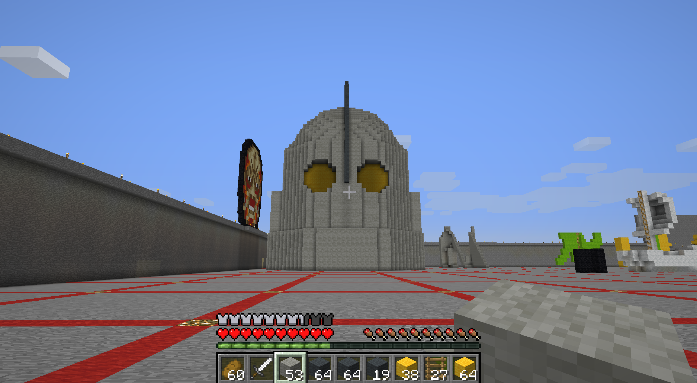

In this project we used Minecraft, a sandbox environment made of blocks, to model an object of cultural significance. I decided to make the head of the Iron Giant robot, as it was a childhood movie for me and others my age.
Because of the limitations of working with blocks it's hard to make anything look round so I decided to make it extremely large so it was as close a representation as possible. It ended up being almost 50 blocks tall and took a while to model evenly, but ended up looking really nice and perfect for the next step for it which was 3d printing our objects.
